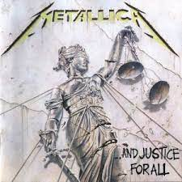
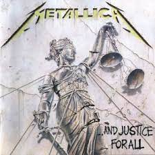
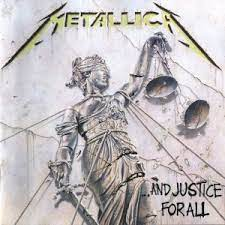

Vídeos de Artistas e Músicas que Gosto
Escolha Um ou Todos para Assistir!
Black Sabbath
Vídeo da Música War Pigs Ao Vivo.
Metallica
Vídeo da Música For Whom The Bell Tolls Ao Vivo.
Loreena McKennitt
Vídeo da Música The Mystic's Dream Ao Vivo
Pearl Jam
Vídeo da Música Even Flow Ao Vivo.

 
